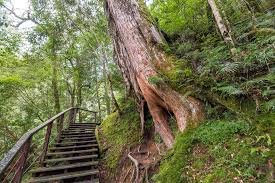

Lalashan (Hora Lala)
Nadmořská Výška： 1,500-2,000 metrů
Mořská oblaka, listy javoru a cesty obřích cypřišů, nabízející krásné výhledy během čtyř ročních období. Sakurové květy na jaře, letní útočiště, maple listy na podzim a nádherná mořská oblaka v zimě.
Zvláštnosti： Shluky Božských Stromů, Mořská Oblaka, Sezona Sakurových Květů
Doporučená Délka Pobytu： Půl dne až celý den

Xiao Wulai Scenic Area
Zvláštnosti： Skywalk, Vodopád, Rainbow Most
Známé svým Skywalk a spektakulárním vodopádem, nabízející výhledy na údolí a Rainbow Most. 11-metrový Skywalk s transparentní skleněnou podlahou pro vzrušující zážitek.
Otevírací Doba： 08:00-17:00
Vstupné： Plná Cena NT$50

Shihmen Reservoir (Shihmen Dam)
Zvláštnosti： Jezerní Cyklostezka, Výhledy na Západ Slunce, Čerstvá Rybí Kuchyně
15 km cyklostezka obíhá jezero, což návštěvníkům umožňuje užít si krásné vodní a horské scenérie. Koruna přehrady je výborným místem pro sledování západu slunce a v okolí je mnoho restaurací s čerstvou rybí kuchyní.
Doporučené Aktivity： Cyklistika, Sledování Západu Slunce, Ochutnávka Čerstvé Ryby
Nejlepší Čas： 15:00 - 18:00